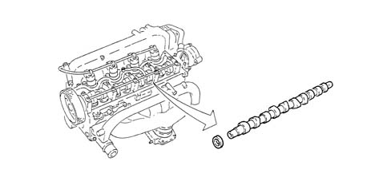
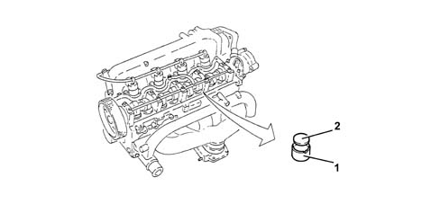

1036B overhead camshaft
- Path
- Descriptions > 10 ENGINE > 1036 TIMING SYSTEM > 1036B overhead camshaft
- Kind
- system description
- Applies to
- engines: 1.9 JTD 8V; all production periods
- Interactive page
- https://sloeber94.github.io/elrnDB-a147/en/#/3022439
Applies to: engines: 1.9 JTD 8V; all production periods
CONSTRUCTION FEATURES
CAMSHAFT
Made from cast iron, with induction temperating on the cams, operated directly by a toothed belt.
The camshaft oil seal is created at the front by an oil ring and at the rear by the vacuum pump gasket.

TAPPETS
The tappets are mechanical type, consisting of a case-hardened and phosphated steel shim (2) in contact with the cam and used for adjusting the valve clearance.
